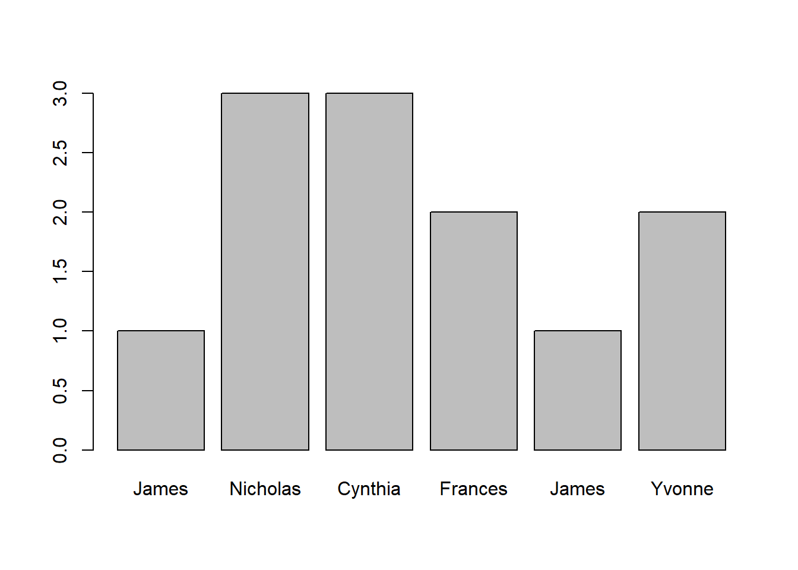
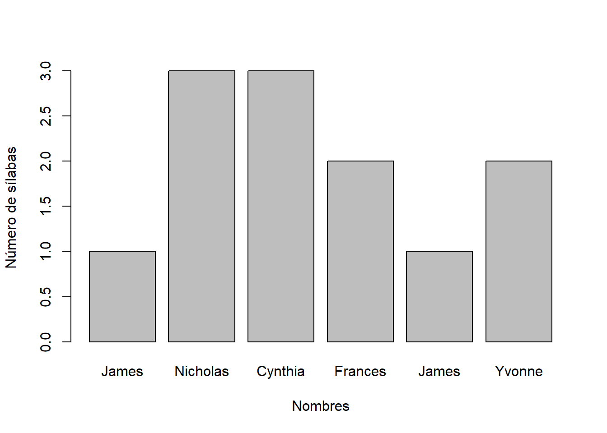

install.packages("languageR"); install.packages("lattice");
install.packages("ggplot2") Estadística para Lingüistas
Introducción a R
Resultados de aprendizaje esperados
Aprender los elementos básicos de la sintaxis de R
Aprender a usar vectores y tablas en R
Aprender a abrir tablas y guardarlas en R
Aprender a buscar información en R usando operadores lógicos
Características de R
Es un entorno de programación (elaborar análisis, desarrollar aplicaciones y programas).
Permite la aplicación de técnicas de análisis estadístico.
Figuras para representar datos con alta calidad y una amplia gama de colores.
Tiene una distribución gratuita.
Tiene una amplia comunidad de usuarios que actualiza el programa, comparte código, publica libros, etcétera.
Hay un vasta bibliografía sobre R y su uso en la investigación lingüística.
Paquetes
El programa R funciona con paquetes de código que agrupan rutinas de programación para hacer tareas específicas como aplicar una prueba estadística, realizar diagramas, entre otras.
library(languageR); library(lattice);
library(ggplot2) R como una calculadora
2 + 2 #suma[1] 4218 - 7 #resta[1] 21110*2 # multiplicación[1] 2010/2 # división[1] 5Operaciones aritméticas
4^2 # calcula 4 a la potencia de 2[1] 1616 ^(1/2) #calcula la raíz cuadrada de 16[1] 4(459 + 51) / 3 # Suma 51 a 459 y divide el resultado por 3.[1] 170459 + (51 / 3) # Suma 459 al resultado de dividir 51 por 3.[1] 476Asignación de variables
Para definir los valores de una variable podemos usar el operador <- o el signo igual =
a <- (459+51)/3b= 459+ (51)/3a ; b[1] 170[1] 476a + b[1] 646Funciones y argumentos
Funciones
Las funciones sirven para realizar tareas (operaciones, mediciones o análisis) específicas. Por ejemplo, la sample que sirve para generar números de forma aleatoria:
Argumentos
x: una estructura de datos (un vector) con los elementos que se desean muestrearsize: el tamaño de la muestrareplace: si se asigna el argumentoreplace = FALSEcada elemento del vector se puede muestrear una vez (opción por defecto), pero si el argumento esreplace = TRUE, los elementos se pueden muestrear varias veces.prob: la probabilidad de aparición de los elementos del vector. El valor por defecto esNULL, lo cual significa que todos los elementos tienen la misma probabilidad.
(Gries, 2013, p.62)
Función sample
Creamos un vector con 10 elementos:
some.data <- c(1:10) # or some.data Se generan 5 elementos con la misma probalilidad:
sample(x=some.data, size=5, replace=TRUE, prob=NULL)[1] 6 4 8 10 10Ahora cada elemento puede aparecer una sola vez:
sample(some.data, 5, FALSE) [1] 1 8 6 7 10Vectores
Vectores numéricos
números <- c(1, 2, 3); números[1] 1 2 3Vectores de caracteres (nótese el uso del ; en estos ejemplos):
tres.nombres <- c("Camilo", "Andrés", "Pedro")tres.nombres[1] "Camilo" "Andrés" "Pedro" Combinar vectores
Es posible crear dos vectores y luego combinarlos
números1 <- c(1, 2, 3); números2 <- c(4, 5, 6)
números.y.números2 <- c(números1,números2) # concatena dos vectores
números.y.números2[1] 1 2 3 4 5 6Lo mismo puede realizarse con la función append:
números.y.números2 <- append(números1,números2) # concatena dos vectores
números.y.números2[1] 1 2 3 4 5 6Trabajando con vectores
Creamos un vector x con la función concatenate:
x <- c("a", "b", "c", "d", "e")
print(x)[1] "a" "b" "c" "d" "e"Extraer un elemento:
x[3][1] "c"Extraer elementos
Creamos el vector y y extraemos el elemento y del vector x:
y <- 3; x[y] [1] "c"Creamos el vector z con 1 y 3 y extraemos los elementos de z del vector x:
z <- c(1, 3); x[z][1] "a" "c"Creamos el vector z con 1, 2 y 3 y extraemos los elementos de z del vector x:
z <- c(1:3); x[z][1] "a" "b" "c"Vectores y expresiones lógicas I
Crear un vector que inicie en 10 y termine en 1
x <- c(10:1)
print(x) [1] 10 9 8 7 6 5 4 3 2 1Los elementos del vector x que equivalen a 4:
x==4 [1] FALSE FALSE FALSE FALSE FALSE FALSE TRUE FALSE FALSE FALSELos elementos del vector x menor o igual a 7:
x<=7 [1] FALSE FALSE FALSE TRUE TRUE TRUE TRUE TRUE TRUE TRUEVectores y expresiones lógicas II
Los elementos del vector x que no son iguales a 8:
x!=8 # which elements of x are not 8 [1] TRUE TRUE FALSE TRUE TRUE TRUE TRUE TRUE TRUE TRUELos elementos del vector x que son mayores a 8 y menores a 3:
(x>8 | x<3) # which elements of x are >8 or <3 [1] TRUE TRUE FALSE FALSE FALSE FALSE FALSE FALSE TRUE TRUEElementos que equivalen a 4:
sum(x==4) # how many elements in x are 4[1] 1Vectores y expresiones lógicas III
Elementos del vector x mayores a 8 o menores a 3:
sum(x>8 | x<3) [1] 4Cuántos elementos del vector x son mayores a 8 o menores a 3:
table(x>8 | x<3)
FALSE TRUE
6 4 En qué posición del vector x se encuentran los elementos igual a 4:
which(x==4)[1] 7En qué posición del vector x se encuentran los elementos que igual o menores a 7:
x; [1] 10 9 8 7 6 5 4 3 2 1which(x<=7)[1] 4 5 6 7 8 9 10En qué posición del vector x se encuentran los elementos diferentes a 8
x; [1] 10 9 8 7 6 5 4 3 2 1which(x!=8)[1] 1 2 4 5 6 7 8 9 10Tablas
Abrir tabla manualmente
Identificar una carpeta en el PC:
choose.files() #PCIdentificar una carpeta en una Mac:
file.choose() #Mac y otrosAbrir archivo en tabulaciones:
tabla1<-read.table(file.choose(), header=TRUE)Abrir archivos csv:
tabla1<-read.csv(file.choose(), header=TRUE)Abrir la tabla desde el archivo de origen:
nombretabla<-read.table("...", header= T)En mi caso, voy a abrir la tabla desde un PC. Así que añado la información de mi directorio de archivos:
tabla1<-read.table("/Users/scien/OneDrive/Clases/EstadísticaparaLingüistas/2025/tablas/nombres.txt", header= T)Con esta definición, cada vez que escriba la variable tabla1 denominada nombres.txt . La función head() nos permite observar las primeras filas y verificar la información de la tabla de datos:
head(tabla1) name nickname gender nameSyls nicknameSyls
1 Albert Al male 2 1
2 Andrew Andy male 2 2
3 Anthony Tony male 3 2
4 Arthur Art male 2 1
5 Arthur Arty male 2 2
6 Bernard Bernie male 2 2Con la función str() obtenemos un resumen con el número de observaciones, el número de variables y los niveles de las variables.
str(tabla1)'data.frame': 91 obs. of 5 variables:
$ name : chr "Albert" "Andrew" "Anthony" "Arthur" ...
$ nickname : chr "Al" "Andy" "Tony" "Art" ...
$ gender : chr "male" "male" "male" "male" ...
$ nameSyls : int 2 2 3 2 2 2 2 1 1 3 ...
$ nicknameSyls: int 1 2 2 1 2 2 1 2 1 1 ...En cambio, con la función summary() obtenemos la estadística descriptiva de nuestra tabla.
summary(tabla1) name nickname gender nameSyls
Length:91 Length:91 Length:91 Min. :1.000
Class :character Class :character Class :character 1st Qu.:2.000
Mode :character Mode :character Mode :character Median :2.000
Mean :2.308
3rd Qu.:3.000
Max. :4.000
nicknameSyls
Min. :1.000
1st Qu.:1.000
Median :1.000
Mean :1.385
3rd Qu.:2.000
Max. :2.000 Búsqueda de filas y columnas
Ahora vamos a ver algunos elementos básicos de R para buscar información en una tabla:
Si queremos extraer información de la primera fila de la segunda columna, debemos usar la siguiente línea:
tabla1[1,2][1] "Al"Para extraer información de la primera fila:
tabla1[1,] name nickname gender nameSyls nicknameSyls
1 Albert Al male 2 1Para extraer información de la primera fila de la primer columna:
tabla1[1,1][1] "Albert"Para extraer información de la primera columna:
tabla1[,1] [1] "Albert" "Andrew" "Anthony" "Arthur" "Arthur"
[6] "Bernard" "Bernard" "Charles" "Charles" "Christopher"
[11] "Daniel" "Daniel" "Donald" "Edward" "Edward"
[16] "Eugene" "Francis" "Francis" "Frederick" "Frederick"
[21] "Henry" "Irving" "James" "James" "John"
[26] "John" "Joseph" "Lawrence" "Leonard" "Nathan"
[31] "Nathan" "Nicholas" "Patrick" "Peter" "Raymond"
[36] "Richard" "Richard" "Robert" "Robert" "Robert"
[41] "Ronald" "Ronald" "Russell" "Samuel" "Samuel"
[46] "Stephan" "Stuart" "Theodore" "Theodore" "Thomas"
[51] "Thomas" "Thomas" "Timothy" "Timothy" "Walter"
[56] "Walter" "William" "William" "William" "William"
[61] "Amanda" "Catherine" "Catherine" "Christine" "Christine"
[66] "Cynthia" "Cynthia" "Deborah" "Deborah" "Elizabeth"
[71] "Elizabeth" "Elizabeth" "Elizabeth" "Florence" "Frances"
[76] "Frances" "Janet" "Janice" "Katherine" "Katherine"
[81] "Nancy" "Pamela" "Patricia" "Roberta" "Sophia"
[86] "Susan" "Susan" "Teresa" "Valerie" "Veronica"
[91] "Yvonne" Para extraer un conjunto específico de filas simplemente creamos un vector:
tabla1[c(24, 32, 67, 75, 23, 91),] name nickname gender nameSyls nicknameSyls
24 James Jimmy male 1 2
32 Nicholas Nick male 3 1
67 Cynthia Cynth female 3 1
75 Frances Fran female 2 1
23 James Jim male 1 1
91 Yvonne Vonna female 2 2Para extraer solamente los datos de los hombres o mujeres:
tabla1[tabla1$gender=="male",] name nickname gender nameSyls nicknameSyls
1 Albert Al male 2 1
2 Andrew Andy male 2 2
3 Anthony Tony male 3 2
4 Arthur Art male 2 1
5 Arthur Arty male 2 2
6 Bernard Bernie male 2 2
7 Bernard Bern male 2 1
8 Charles Charlie male 1 2
9 Charles Chuck male 1 1
10 Christopher Chris male 3 1
11 Daniel Dan male 2 1
12 Daniel Danny male 2 2
13 Donald Don male 2 1
14 Edward Ed male 2 1
15 Edward Eddie male 2 2
16 Eugene Gene male 2 1
17 Francis Frank male 2 1
18 Francis Fran male 2 1
19 Frederick Fred male 3 1
20 Frederick Freddy male 3 2
21 Henry Hank male 2 1
22 Irving Irv male 2 1
23 James Jim male 1 1
24 James Jimmy male 1 2
25 John Jack male 1 1
26 John Jacky male 1 2
27 Joseph Joe male 2 1
28 Lawrence Larry male 2 2
29 Leonard Leo male 2 1
30 Nathan Nat male 2 1
31 Nathan Nate male 2 1
32 Nicholas Nick male 3 1
33 Patrick Pat male 2 1
34 Peter Pete male 2 1
35 Raymond Ray male 2 2
36 Richard Dick male 2 1
37 Richard Rick male 2 1
38 Robert Bob male 2 1
39 Robert Bobby male 2 2
40 Robert Bobby male 2 2
41 Ronald Ron male 2 1
42 Ronald Ronny male 2 2
43 Russell Russ male 2 1
44 Samuel Sam male 2 1
45 Samuel Sammy male 2 2
46 Stephan Steve male 2 1
47 Stuart Stu male 2 1
48 Theodore Ted male 3 1
49 Theodore Teddy male 3 2
50 Thomas Tom male 2 1
51 Thomas Thom male 2 1
52 Thomas Thom male 2 1
53 Timothy Tim male 3 1
54 Timothy Timmy male 3 2
55 Walter Walt male 2 1
56 Walter Wally male 2 2
57 William Bill male 2 1
58 William Billy male 2 2
59 William Billy male 2 2
60 William Will male 2 1En la línea anterior tabla1$gender debe leerse como: la variable gender de la tabla tabla1.
Visualización de datos
Ahora vamos a diagramar el número de sílabas de algunos nombre de la tabla. Este diagrama lo haremos a partir de vectores. Así que creamos un vector con los nombres que queremos diagramar:
nombres<- c("James", "Nicholas","Cynthia", "Frances","James", "Yvonne")Después creamos un vector con el número de sílabas de cada uno de los seis nombres :
silabas<- c(1,3,3,2,1,2)Con la función names asignamos rótulos al vectos sílabas:
names(silabas)= nombresBarplot (diagrama de barras)
Ahora hacemos un barplot (diagrama de barras) con la información que acabamos de crear:
barplot(silabas)
Diagrama de barras con rótulos
Finalmente, añadimos rótulos con los argumentos xlab= y ylab= como se indica a continuación:
barplot(silabas, xlab="Nombres", ylab="Número de sílabas")
Bibliografía 📚
Gries, Stefan. 2013. Statistic for linguistics with R. A practical introduction. Berlin: Mouton de Gruyter.
Levshina, Natalia. 2015. How to Do Linguistics with R: Data exploration and statistical analysis. Amsterdam: John Benjamins. Capítulo 2, pp. 21-40.
Smith, Bridget J., Beckman, Mary E., and Foltz, Anouschka (2016). Analyzing the sounds of languages. Ohio State University. Tabla 1, y capítulo 0. Recuperado de: [http://hdl.handle.net/1811/77848]